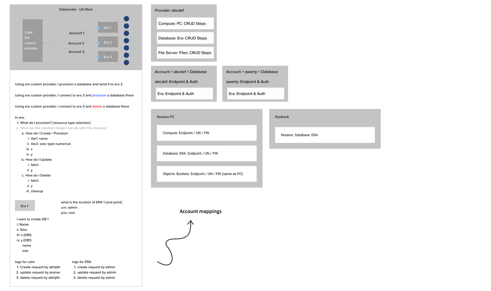
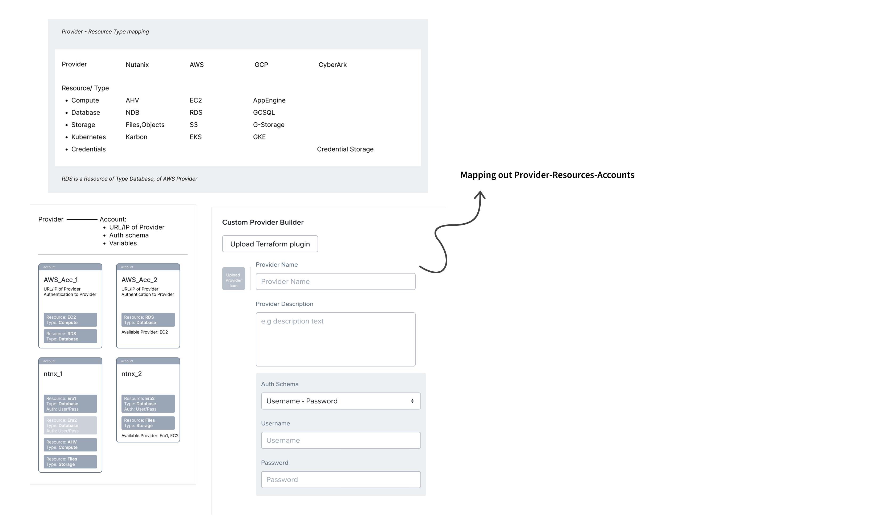
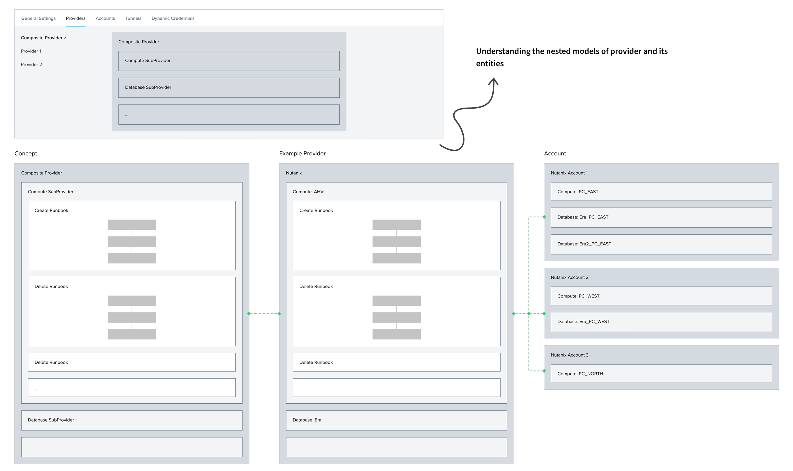
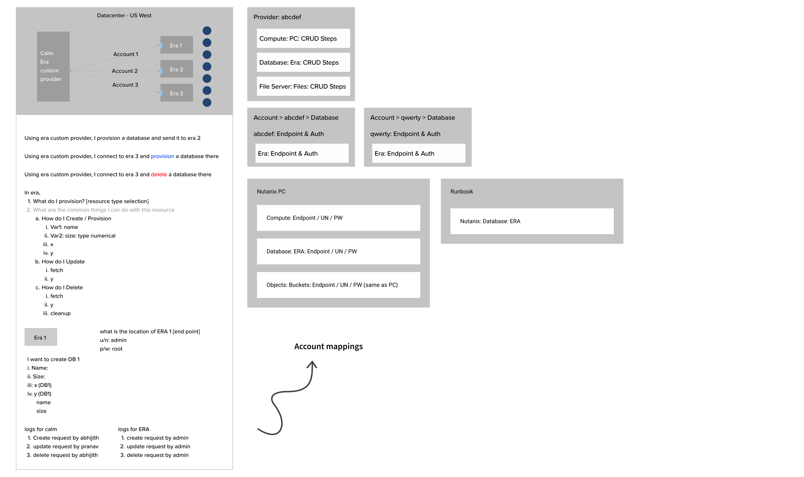
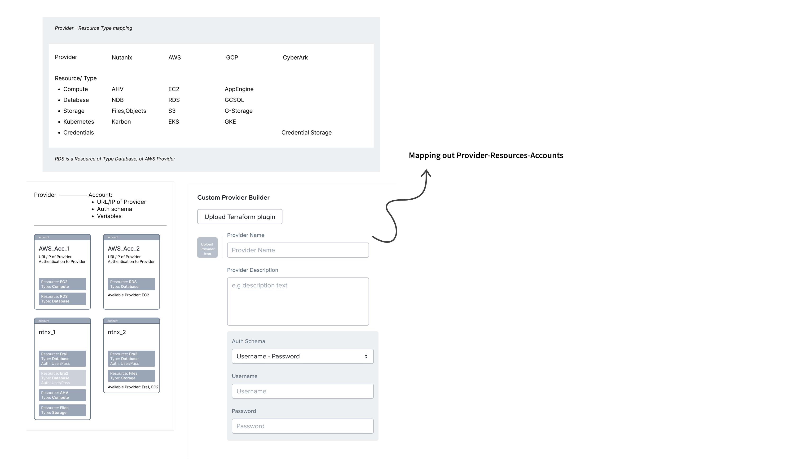
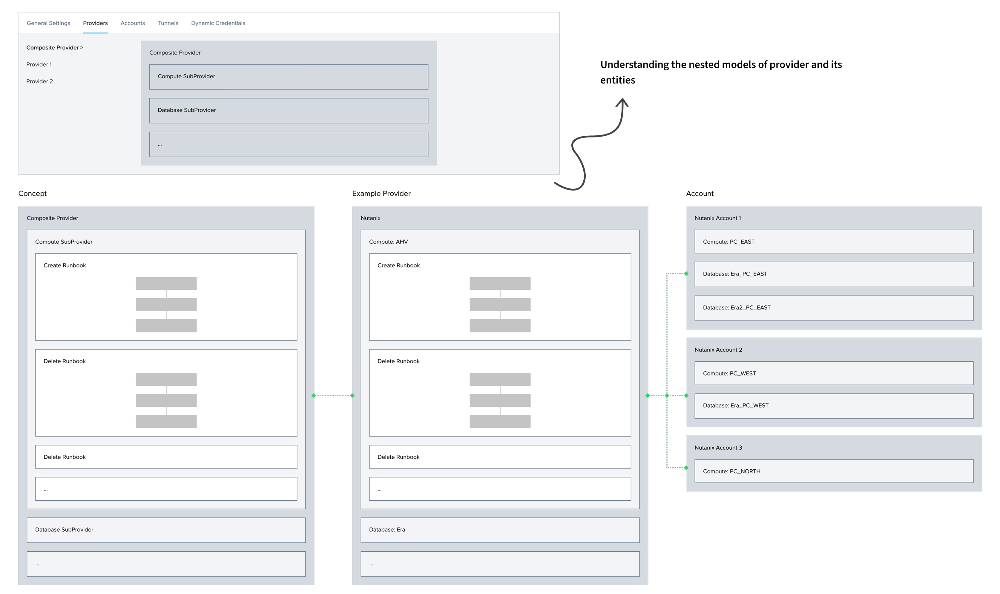
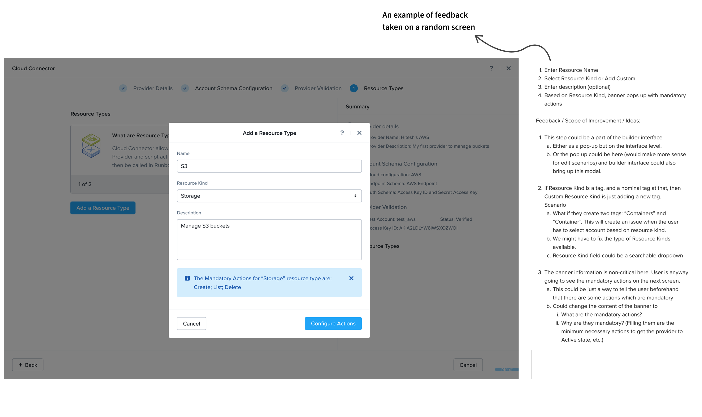

Context
NUTANIX
Nutanix builds cloud infrastructure software for enterprises running hybrid and multi-cloud environments.
SELF SERVICE
Within Nutanix Cloud Manager (NCM), Self Service is a tool that helps Cloud Ops and IT Admins to orchestrate and automate tasks like setting up servers, managing application lifecycles end-to-end, and running cloud services.
THE GAP
Nutanix natively supports 5 Providers and allows you to manage only compute resources.

BUSINESS PROBLEM
Today's enterprise customers have multi-cloud + hybrid setups, niche clouds like Alibaba and more workload types (databases, storage files, networks) than Nutanix's native integrations could cover.
Equip the product with robust capabilities that can help customers quickly onboard new cloud platforms and manage the workloads on top of it.
USER PROBLEM
Native providers didn't cover key workloads(database, network, storage). Native support was only for compute resources. Users used eScripts and APIs as hacky solutions, which generally worked for Day-0; but these failed for Day-2 management and operations because the platform lacked resource semantics.
- Be able to connect to the hybrid could accounts of their choice.
- Use Self Service's automation and orchestration capabilities to manage end-to-end lifecycle of their database, storage, and other resource workloads.


The Solution
CUSTOM PROVIDER
Custom Provider is a way for Cloud Ops teams to extend Nutanix Self-Service to manage any
external workload—not just the ones the product supports out of the box. It lets an admin
define: how to connect to a system, what "things"(resources) exist in it, and what
actions can be run on those things—so the platform can automate them safely and
repeatedly.
First of a kind GUI editor! No template for a “mix & match infra creator” existed so far
in the market.
MY ROLE
Sole designer for Custom Provider Builder - an extensibility workflow that lets Cloud Ops teams onboard any cloud provider and any workload (DB/storage/network) beyond native provider support. Owned end-to-end UX for a GUI mix-n-match entity builder— UX strategy → flows → interaction model → UI → validation → handoff
IMPACT
Reduced friction to extend Self-Service beyond built-in providers; positioned the product for broader TAM


Design
Considering I can’t get into the details of use-cases and designs due to an NDA, and since the designs covers multiple flows and is very extensive in nature, I'll be sharing a few screenshots and flows that capture the major UX problems that I've designed for and how certain aspects of the design evolved over time. Always up to dive more over coffee :)
UX PROBLEMS
- Designed a learnable mental model for a complex extensibility framework by introducing a Provider → Resource → Action → Task hierarchy with breadcrumbs for orientation and navigation.
- Made ‘programmable power’ usable. The builder turns code-like concepts into composable, stepwise decisions (auth → resources → actions → inputs/outputs → verify).


- While pro users could easily learn and use the GUI builder, there were still a lot of users who would be new to the product, the feature, it’s concepts and terminologies.
- In testing with 6 Service Engineers, we found the power-user builder was cognitively heavy. So designed a separate first-time wizard flow so that users have a easier learning curve when they first sign into the mental model.


- Designed a dedicated interactive onboarding flow for the feature.
- Since the product was new and tech heavy, we decided to re-work the existing onboarding patterns being used in the product as we wanted a more interactive onboarding experience for the users.


- Editing a provider can break dependent accounts/apps/runbooks; the risk is non-obvious.
- Designed clear draft state model + warnings + gating + “blast radius” communication (who/what gets impacted, and when).
EVOLUTIONS
- The meaning and functions of the builder grew along with its designs. A lot of the decisions about how entities should be represented, how they interact with each other, how the user navigates and finds information kept changing as we (PM, Eng and Design) were also learning the feature and designing its capabilities on the go.
- Starting from a builder where the user edits just a single resource with actions on the top as tabs, the journey finally ended with a full fledged Provider Builder, where the user can edit all aspects of the provider on a single pane of glass.
Process
STAKEHOLDERS
I worked closely with 1 principle PM, and 3 lead engineers during the research and product refining phase; and closely with UI engineers and QA during deployment and testing.
UNDERSTANDING
I believe rich domain understanding is the key to building products that translate tech and data to users in the best possible way. So as it goes with most of the work I’ve done, my first step was to comb through the product requirements through its versions, spend as much time possible with PMs and Lead Eng to get questions answered and concepts cleared. I usually process all the information input by drawing out different types of maps and flowcharts. And that’s where many a times the solution designing begin too.
 





MAPS TO FLOWS
From logic flows and task flows, I started to build out the first set designs covering the major user flow of creating a provider.
ITERATIONS
Once the first set of designs start getting discussed, iteration is the name of the game. I spent a lot of time with engineers and the PM iterating, refining and building on these flows. With a new feature like this, every single decision had to be iterated. From where do we place a save button, to how we group information, to what the builder structure should be.
FEEDBACK
Receiving, validating and working on the feedback leads to the next set of iterations. I try to take feedback early on, as a lot of effort goes wasted in taking a refined design to the stakeholders, only to realise that many things wouldn’t work.
SNIPPETS
Attaching a few snippets of some fun parts of the process
Glossary
For all further purposes, here is a small glossary
A connector that lets Self-Service talk to another system (AWS, databases, internal tools)
A "thing" in that system you want to manage (bucket, database, VM)
An operation you can perform on a resource (create, delete, resize, backup).
The scripted steps that execute an action reliably (API calls, scripts, runbooks).
Coordinating multiple actions in the right order across systems.
A reusable recipe for provisioning something end-to-end (what to create + in what order).